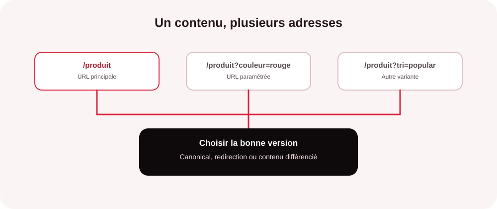
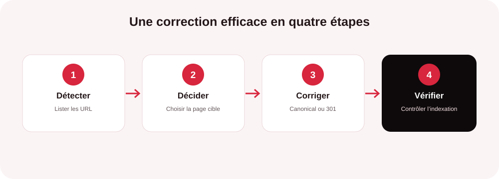

Le contenu dupliqué désigne des textes identiques ou très proches accessibles à plusieurs adresses web. Il peut apparaître involontairement : filtres de catalogue, variantes d’URL, versions HTTP et HTTPS, fiches produits similaires ou republication d’un article. Le problème n’est pas simplement la répétition d’un paragraphe : c’est surtout de savoir quelle page doit être comprise, indexée et proposée aux internautes.
Comprendre les différentes formes de doublons
On distingue les doublons internes, présents sur plusieurs URL d’un même site, et les doublons externes, lorsqu’un contenu existe aussi sur un autre domaine. Les copies exactes sont faciles à repérer ; les quasi-doublons demandent davantage de jugement. Deux pages qui ne diffèrent que par le nom d’une ville ou quelques caractéristiques produit peuvent, par exemple, répondre à la même intention de recherche.

Quels effets le contenu dupliqué peut-il avoir sur le référencement ?
Le contenu dupliqué n’entraîne pas automatiquement une pénalité Google. Lorsque plusieurs pages sont très similaires, Google peut les regrouper et choisir une URL canonique, c’est-à-dire la version qu’il juge principale. Il peut alors ne pas afficher les autres versions dans les résultats. En revanche, une copie volontaire destinée à manipuler le classement peut relever de pratiques abusives et entraîner des mesures.
Le risque concret est que la version retenue ne soit pas celle que vous privilégiez. Les signaux de liens peuvent être répartis entre plusieurs URL, les moteurs peuvent consacrer du temps à explorer des variantes peu utiles et des pages quasi identiques peuvent se concurrencer. Sur un site e-commerce ou local, des pages générées en série sans valeur distincte risquent de ne pas apporter la visibilité espérée.
Comment interpréter les données de Google Search Console
Dans le rapport d’indexation des pages, les libellés liés aux doublons aident à comprendre la décision de Google. « Page en double : Google n’a pas choisi la même URL canonique que l’utilisateur » signifie que la canonical déclarée diffère de celle retenue par Google. « Page en double, l’utilisateur n’a pas indiqué de version canonique » signale qu’aucune préférence explicite n’a été fournie. Ces états ne sont pas nécessairement des erreurs : ils doivent être comparés à votre objectif d’indexation.
Inspectez l’URL concernée, la canonique déclarée, la canonique choisie par Google, les liens internes et les éventuelles redirections. Si Google sélectionne la bonne page, une intervention peut être inutile. Si le choix contredit votre stratégie, corrigez les signaux incohérents plutôt que de demander simplement une nouvelle indexation.
Vous ne savez pas quelles URL conserver ?
Un audit SEO peut distinguer les doublons sans enjeu des problèmes qui dispersent votre visibilité et prioriser les corrections selon leur impact.
Demander un audit SEOQuelle correction appliquer selon le type de doublon ?
| Situation constatée | Action recommandée | Point de vigilance |
|---|---|---|
| HTTP/HTTPS, www/sans www ou variantes avec slash | Redirection 301 vers l’URL de référence et liens internes harmonisés. | Éviter les chaînes de redirections et les versions accessibles simultanément. |
| Filtres et paramètres d’URL | Définir les pages qui méritent l’indexation ; utiliser des canoniques cohérentes et limiter les liens vers les variantes inutiles. | Une page filtrée utile à une recherche spécifique peut mériter sa propre URL. |
| Fiches produits presque identiques | Regrouper les variantes sur une page lorsque c’est pertinent et rédiger des descriptions réellement distinctives. | Ne pas fusionner des produits qui répondent à des besoins différents. |
| Pages locales trop semblables | Ajouter des informations locales authentiques : services disponibles, zone desservie, équipe, réalisations et coordonnées pertinentes. | Remplacer seulement le nom de la ville ne crée pas une page utile. |
| Article republié sur un autre site | Privilégier une republication avec accord, attribution et, si possible, un lien canonique vers l’original. | La canonique externe est un signal, pas une garantie de sélection. |
| Page obsolète remplacée par une autre | Mettre en place une redirection 301 si la nouvelle page répond au même besoin. | Ne pas rediriger toutes les anciennes URL vers la page d’accueil. |
La balise rel="canonical" est adaptée lorsque plusieurs URL doivent rester accessibles, mais qu’une version principale doit être privilégiée. La redirection 301 convient plutôt lorsqu’une ancienne adresse doit définitivement céder la place à une autre. La balise noindex répond à un autre besoin : demander que la page ne soit pas indexée. Elle ne remplace pas une canonical et ne doit pas être utilisée à l’aveugle.
Une méthode simple pour traiter chaque cas durablement
- Recenser les URL et regrouper les pages dont le contenu ou l’intention se recoupe.
- Définir la page à conserver en fonction de son utilité, de ses performances et de sa capacité à répondre à la recherche.
- Corriger les redirections, canonicals, liens internes, sitemaps et règles de génération d’URL.
- Différencier les pages qui ont une raison légitime d’exister en ajoutant une valeur propre, pas du texte artificiel.
- Contrôler ensuite l’indexation, la canonique choisie, les impressions et les clics dans Search Console.

Évitez de supprimer une page simplement parce qu’elle partage quelques paragraphes avec une autre. Commencez par vérifier son rôle dans le parcours utilisateur, ses liens entrants et son trafic. Une correction bien ciblée préserve les acquis tout en clarifiant l’architecture du site.
Contenu dupliqué et GEO : pourquoi la clarté reste essentielle
Pour le GEO, l’optimisation destinée aux moteurs de réponse par IA, des informations cohérentes et distinctes facilitent aussi la compréhension de votre expertise. Des pages qui se répètent sans apporter de contexte peuvent brouiller les signaux sur vos offres, vos implantations ou vos spécialités. À l’inverse, des contenus structurés, factuels, à jour et complémentaires donnent aux moteurs comme aux visiteurs une base plus claire pour comprendre votre activité. Cela ne garantit pas une citation par une IA, mais renforce la qualité générale de votre présence numérique.
En résumé : traiter le doublon, pas seulement le symptôme
Le bon réflexe n’est pas de chercher à rendre chaque phrase différente à tout prix. Il consiste à déterminer quelle page doit exister, quelle version doit être indexée et quelle valeur unique elle apporte. Une stratégie cohérente associe diagnostic technique, arbitrage éditorial et contrôle après déploiement.
Faites le point sur les doublons de votre site
MinoSeo accompagne les entreprises en SEO et GEO depuis plus de 15 ans. Nous identifions les freins, hiérarchisons les actions et vous aidons à consolider une visibilité durable.
Échanger avec MinoSeo